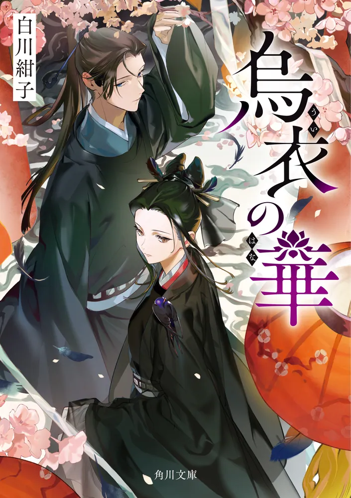
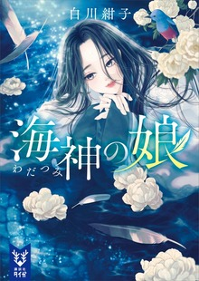
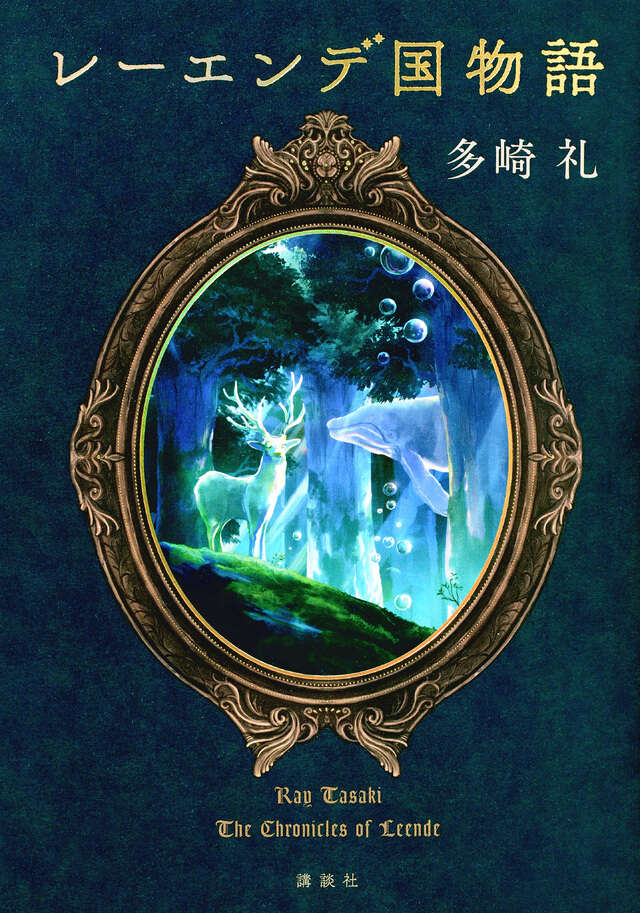
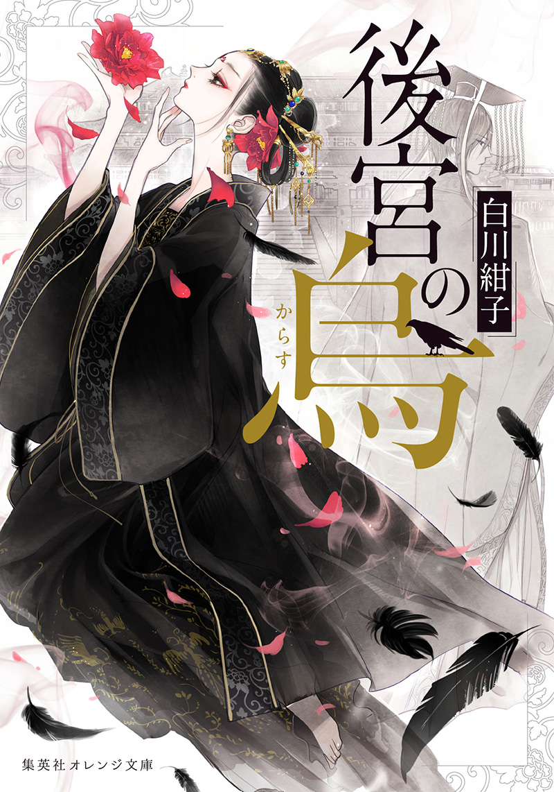

烏衣の華シリーズ
著者：白川 紺子（しらかわ こうこ）
第1巻発売日：2024年04月25日
概要：死者の声を聞く力を持つ少女・董月季が、宮廷で起こる怪異や謎に向き合う中華風幻想ミステリー。
複数巻にわたって続く小説やシリーズ作品を、作品ごとにまとめます。

著者：白川 紺子（しらかわ こうこ）
第1巻発売日：2024年04月25日
概要：死者の声を聞く力を持つ少女・董月季が、宮廷で起こる怪異や謎に向き合う中華風幻想ミステリー。

著者：白川 紺子（しらかわ こうこ）
第1巻発売日：2023年07月14日
概要：海神を信仰する島々を舞台に、神と人、人と人との縁や運命を描く幻想的な物語。

著者：多崎 礼（たさき れい）
第1巻発売日：2023年06月14日
概要：呪われた土地レーエンデを舞台に、人々の出会いと選択が国の歴史を動かしていく壮大なファンタジー。
著者：中西モトオ
第1巻発売日：2019年06月21日
概要：江戸から平成へ、鬼となった青年が長い歳月を生きながら鬼と人の因縁に向き合う和風大河ファンタジー。

著者：白川 紺子（しらかわ こうこ）
第1巻発売日：2018年04月20日
概要：後宮の奥深くに暮らす特別な妃・烏妃が、怪異や謎めいた依頼を解き明かしていく中華幻想譚。
著者：阿部智里（あべ ちさと）
第1巻発売日：2012年06月26日
概要：人の姿に変身する八咫烏の一族が暮らす異世界・山内を舞台に、宮廷の権力争いや謎を描く和風ファンタジー。